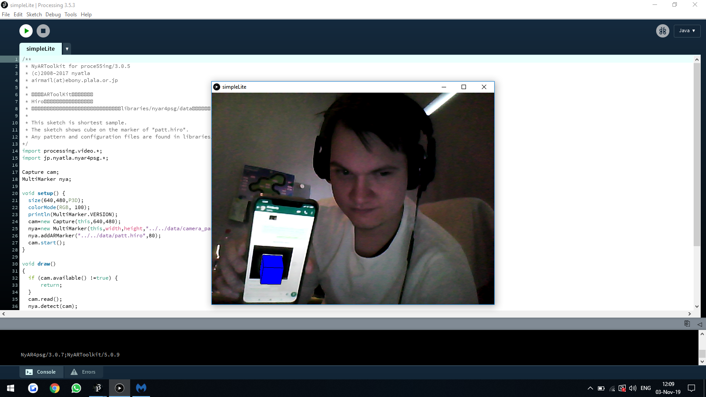

In deze workshop heb ik gewerkt met processing. Met processing kun je allerlei toffe visuele dingen doen. Benieuwd naar wat je er allemaal mee kunt doen? Lees dan gauw verder.
Assignment 1

Hier maakte ik een aantal verschillende vormen. Zo heb ik geleerd hoe je de kleur kunt aanpassen, hoe je randjes om de cirkels kunt krijgen en hebben de cirkels bepaalde vormen gekregen.
Assignment 2

In deze opdracht maakte ik andere vormen zoals een lijn, driehoek, vierkant en rechthoek.
Assignment 3
In deze video maakte ik dingen interactief.
Assignment CV1
In deze video werken we met gezichtsherkenning. De groene cirkel volgt gezichten.
Assignment CV2
In deze video plaatsen we een clownneus door gebruik te maken van gezichtsherkenning.
Assignment CV3
In deze video zetten we alles om naar zwartte en witte strepen.
Assignment AR
In deze afbeelding zien we een voorbeeld van een Augmented Reality marker op een scherm.